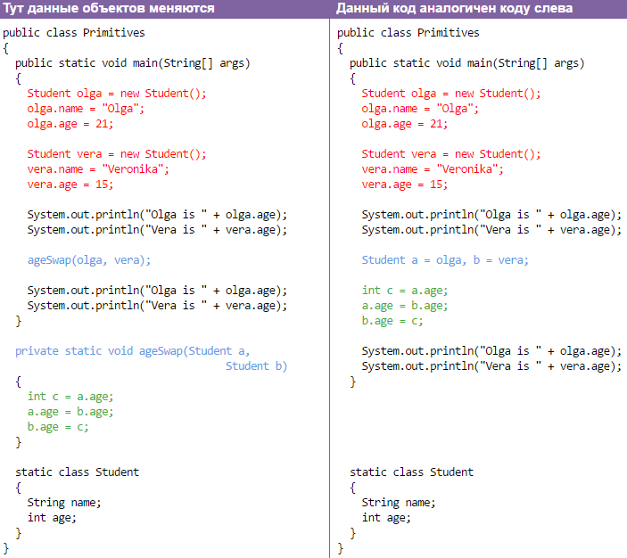

Java, надо и его освоить. Не теряю надежду вникнуть в мир программирования, который сначала привлекает, а потом вываливает тонну условностей, которым даже гуманитарные науки позавидуют.
База конспектов.Вторая версия конспекта.
Оглавление.
Общий принципиальный вид.
В паскале всё было понятно с первых строк учебника. Вот вам компилятор и стандартные функции. Здесь пока я даже не понял, куда писать, чтобы оно заработало. На сайте, где я изучаю, встроенный компилятор? Но конспект всё равно писать надо. Вероятно, стоит показать первую программу. Вроде бы, можно создать файл.java, текстовым редактором записать код, потом открыть в JVM, виртуальной машине джава. Или ещё каком компиляторе. Один файл - один класс с майн-методом, имя файла и класса совпадает. Класс содержит функции, называют их иногда ещё методами. Методы содержат команды, но не всегда.
Комманды заканчиваются точкой с запятой. Знакомый момент. Ещё вот:
Пока всё принимаем на веру. Оно работает таким, каким есть. Если что-то поменять, эффект изменится, но это стоит узнавать позже. Табличный метод не поможет новичку. Вот команда вывода. Та, которая после выполнения переводит курсор строкой ниже. Вот и первое наблюдение. Этот метод может вывести только одно значение. Результат разных операций с числами или строками, но только один определённого типа. (a,b,"слово") не сработает. (a+b+"слово") сработает.
System.out.println(); Команда вывода, строковая константа в кавычках "".
Комментарии нужны для разработчика. Компилятор их не видит, и в рабочий код не пускает. Привести текстовый пример можно с помощью экранирования, но пока непонятно, как его использовать.
Глава 2. Переменные.
Переменные бывают примитивными, одного из базовых типов, или сложными (классовыми, составными, ссылочными). Пример объявления примитивного типа:
int a,b,c, x=5;
double k,l,n, p=3,14;
String w1,w2,str1 = "sometext";
boolean q1= true; q2= false;
Целые, дробные, строковые, логические. Некоторым сразу при объявлении назначено значение. Если я правильно понял, раздела декларации переменных нет, просто каждую нужно объявить до её использования, не после. Тип String начинается на заглавную S. По неизвестным причинам маленькая в обучающем тесте не сработала. Кстати, String не примитивный тип, он является массивом значений типа char, являющих собой один символ. Но его использование не вызывает особых трудностей, поэтому он не особо отличается от примитивных.
Действия с ними производятся вполне очевидные. +-*/. Для некоторых можно будет привести табличные результаты. Строки можно складывать, добавляя строковые константы в кавычках, например " " пробелы, но необязательно. Можно сложить строку и число, результат будет строковым. Три пикчи:
Теперь более сложно для неподготовленного восприятия. Переменные-ссылки – это переменные всех типов, кроме примитивных. Такие переменные содержат в себе только адрес объекта (ссылку на объект). Переменные примитивных типов хранят в себе значения, а переменные типов-классов хранят ссылку на объекты этого же класса, ну или хранят null.
Static class ClName1
{
int a; String str;
}
Создан класс с непонятным модификатором static. Ещё есть public, но это можно написать позднее. Класс состоит из двух переменных примитивного типа. Расположение этого кода может быть после объявления переменной данного класса, но само объявление по прежнему ставится перед использованием переменной, хотя этот момент довольно пока неясный.
ClName1 prm;
prm = new ClName1(); (Или сокращённая версия -- ClName1 prm = new ClName1(); )
prm.a = 1;
prm.str= "sometext";
Создали переменную prm, создали вариант класса и присвоили переменной ссылку на него. В варианте есть две переменных примитивного типа, через имя класса и после точки имя переменной присвоили им значения. Это грубо описанный функционал, нужный для понимания данного этапа.
Если класс содержит комманды, напимер вывод текста, то при вызове и создании этого объекта действия будут выполнены.
В завершение немного лирического отступления, вариант кода и маленькое пояснение модификаторов -- область видимости, применения.
Глава 3. Методы.
Метод/функция есть исполняемая часть программы, поэтому их хранить нужно более системно и наглядно. public static void main(String[] args) {} - это для основного метода. Другие методы вроде бы нельзя использовать внутри него, но и рядом с ним работают нормально. void означает, что метод не возвращает значение.
public static int FuncName1(int a, int b)
{
int x;
x=a;
a=b;
b=x;
return 5;
}
В верхнем примере описывается метод целого типа. Он принимает при вызове два аргумента, внутри использует их значения, при этом не модифицируя оригинальные переменные. С помощью ещё одной внутренней переменной меняет их значения местами, и возвращает число 5 туда, откуда был вызван. Бесполезный код. Вряд ли функция может вернуть сразу несколько значений. В массиве может быть. И для замены значений переменных нужно, чтобы изменялись оригинальные переменные. Возможности для этого приведены будут позже.

Return может возвращать значение выражения, но только одно. Поэтому оно хорошо используется как формула, или любая другая операция с числами для нахождения одного значения.
Глава 4. Конкатенация.
Склеивание или объединение строк ещё называют таким коротким словом, как конкатенация. Кто любит котов, можно запомнить так: Кон-Котэ-Нация. Шутка. Принцип склеивания строк простой. Если мы «складываем» строку и ещё что-то, то это что-то преобразовывается в строку посредством неявного вызова метода toString(). В каждой операции должна участвовать строка -- если выражение включает несколько операций с разными типами, и строковая переменная находится в конце, то первые операции сложения приведут к ошибке.
Глава 5. Попытка ввести данные.
Стало слишком сложно. Процесс обучения должен сопровождаться возможностью выявлять мелкие особенности языка, оттачивать нюансы. Но тут даже не сказано, как компилировать свои собственные коды. Да и проверочные тесты немного странные, логика формулировки задач иногда нарушена. В общем, ну его. Я хочу научиться жаве, а не попасть на шоу экстрасенсов. Попробую другой источник для изучения. Вот ещё напоследок длинные и короткие виды классов.
В начало документа.
Источник обучения.